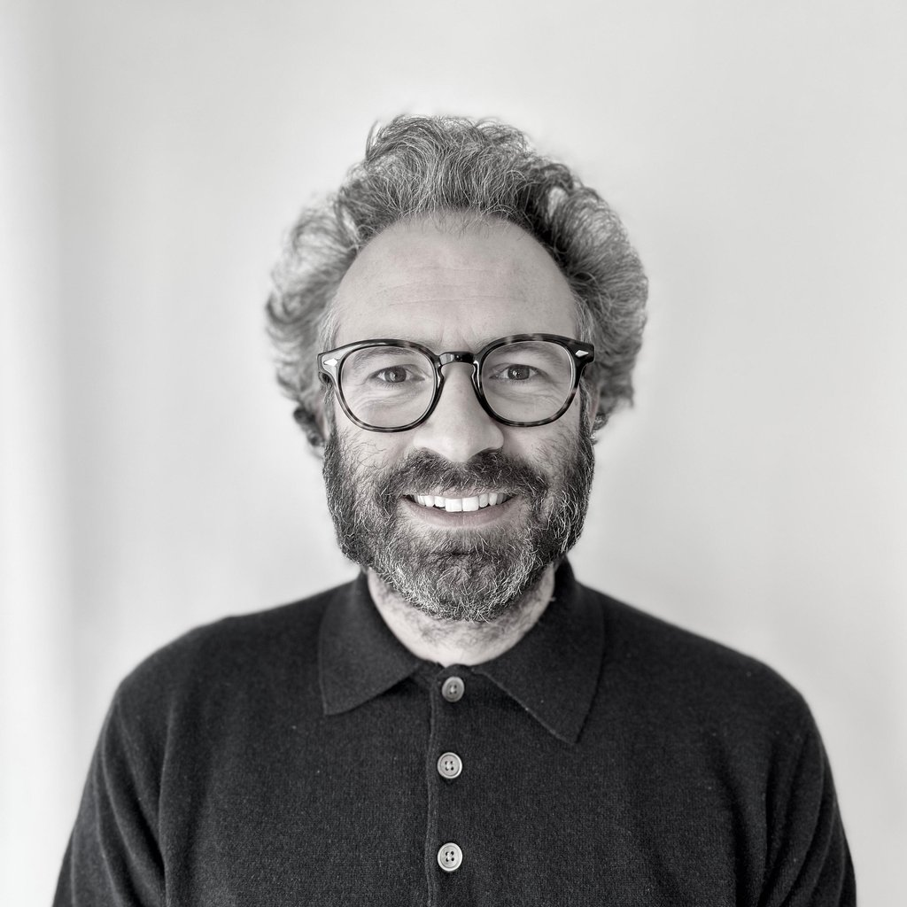

Sobre Julián Vicens

Nascut i criat a Mallorca. Sóc científic investigador i enginyer. Actualment treballo en ciència de dades i big data analytics al centre tecnològic de recerca Eurecat. Com a investigador estudio sistemes socials complexos, aprenentatge automàtic i interacció persona-ordinador, particularment el disseny de sistemes d'aprenentatge automàtic justos, el desvetllament de desigualtats en sistemes socials, el desenvolupament de plataformes participatives i l'estudi de patrons de comportament col·lectiu en diferents temàtiques -cooperació, desinformació o salut pública-. Combino la meva feina com a investigador amb la docència a la Universitat Oberta de Catalunya (UOC) pel Grau i el Màster de Ciència de Dades, així com la realització de tallers de ciència ciutadana, en la intersecció entre ciència, tecnologia, educació i les arts.
Sóc Enginyer de Telecomunicacions i tinc un Màster en Xarxes de Telecomunicacions per la Universitat Ramon Llull (Barcelona, Espanya), on també vaig treballar en projectes de recerca centrats en acústica, tecnologies musicals i interfícies persona-ordinador. Després d'alguns anys treballant per a empreses i com a autònom, desenvolupant aplicacions mòbils per a diferents sectors, vaig començar un doctorat combinant el disseny i desenvolupament de productes culturals per a una empresa de gestió cultural amb la recerca al Departament d'Enginyeria Informàtica i Matemàtiques i al Departament de Pedagogia de la Universitat Rovira i Virgili (Tarragona, Espanya), on vaig realitzar la meva tesi doctoral titulada «Human Behavior Experimentation and Participation in Scientific Activities in the Wild» centrada en el desenvolupament de plataformes participatives en el marc de la ciència ciutadana i l'estudi del comportament social, aplicant tècniques d'aprenentatge automàtic per desvetllar patrons de comportament en temes com el canvi climàtic o la comunitat de salut mental.
Vaig ser investigador visitant a l'EECS i al Segal Design Institute de la Northwestern University (Evanston, Illinois), treballant en disseny centrat en la persona dins el programa DTR. Allà vaig dissenyar i desenvolupar una plataforma de crowdsourcing per estudiar patrons naturals. També vaig visitar el Department of Chemical and Biological Engineering millorant tècniques de ciència de dades aplicades a experiments socials per entendre comportaments col·lectius.
Vaig treballar al Departament de Física de la Matèria Condensada de la Universitat de Barcelona formant part del grup de recerca OpenSystems, així com de Complexity Lab Barcelona i l'Institut de Sistemes Complexos de la Universitat de Barcelona (UBICS), participant en projectes com STEM4Youth, BiblioLab i altres, on la meva feina uneix els camps dels sistemes complexos, la interacció persona-ordinador, la ciència ciutadana, la ciència social computacional, la teoria de jocs, la ciència de dades, la visualització de dades i altres.